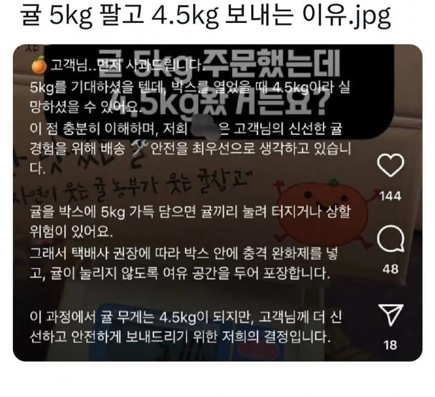

귤 5kg 팔았는데 4.5kg 보내는 이유
댓글
이건 글이랑 좀 무관한 질문인데 위탁 판매 수익 괜찮은편임? 스마트 스토어 강의 홍보하던 사람들이 과일 위탁 같은것도 같이 하는 거 같아서
저런데는 상호명좀 공유해라 씨발 그래야 안사지
그런 큰박스로 5kg 채우면 되지 저걸 핑계라고
개소리 집어치우고 4.5kg라고 고치라고
아가리가 길면 사기다
그럼 4.5kg이라고 해야지
그럼 100g당 가격이 올라가버린다구!
과일들은 보통 더 들어있지 않나ㅋㅋ
과수원 하던 우리집은 박스 무게 빼고 내용물 무게만 따지는데 항상 무게 오버되게 보냈었는데...
애터미짐
ㅋㅋㅋㅋㅋㅋㅋㅋㅋㅋㅋㅋㅋㅋㅋㅋㅋㅋㅋㅋㅋㅋㅋㅋㅋㅋㅋㅋ
과일시키면 보통 중량 초과로 보내던데 개씹새끼들이네 ㅋㅋ
???: 나중에 후회하지
다 먹지도 못하고 (결국) 남기잖아요~
개병신새끼들이 왤케 많냐
저런식으로하면 차라리비싸도 딴데서 산다 ㄹㅇ
뭔 ㅈ같은 소리세요
사기야 병신아
해외 무역업하는 사람들은 안다. 절대로 한국인을 거래처로 두지 않아야 한다는걸. 한국인 작은 장사방식 하나하나가 미개하다보니까 자국에다 사기치는 놈들이나 먹고 사는거다.
그럼 4.5로 팔아
박스포함5kg 하지그랬냐?ㅋㅋ
그럼 4.5 kg으로 기입하면 되는거 아닌가?
그럼 씨발 4.5로 기입 해야지
4.5로팔면 4kg 넣어야한다니까?? 이해를못하나
엥. 그럼 500그램 따로 박스 하나 더보내야지 ㅋㅋㅋㅋㅋㅋ 애초에 4.5로 팔던가 저게무슨 ㅋㅋㅋㅋ
뒤질라고
헛소리를 한다면 사기치고있다는겁니다
개인 판매라 저런 건지 몰라도 일반적은 유통으로 보면 개삽소리인게 공판장 낼때도 저딴식으로 내면 아에 경매인들이 거를걸 부자재무게 다 감안해서 넣음. 유통 표기 이런거 날로 할수 있는 나라가 아님.
500g 가격을 쳐 빼든가 그럼.
저렇게 말할거면 박스포함 중량이랑
실중량 기재를 해야지 소비자 기망 아니냐?? ㅋㅋ
ㅋㅋㅋ 미친소리 하고있네. 내가 위탁으로 귤 팔았었는데, 그 당시 농장 주인은 10키로 시키면 500그람씩 더 넣었음.
왜냐고 물으니, 어차피 배달가면 몇개는 무조건 깨져서 고객한테 더 넣었으니 양해 부탁한다고 말하면, 몇개 깨져도 너그럽게 용서 한다고 하더라.